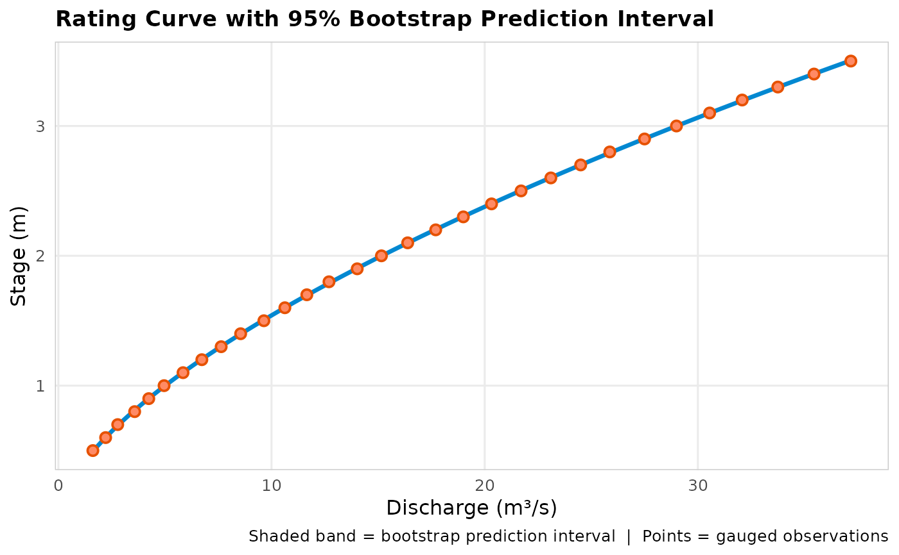

Plot a fitted rating curve with a bootstrap prediction interval
Source:R/rating_curve_demo.R
plot_rating_interval.RdLike rating_plot(), but for a fit produced with
rate_optimise(..., n_boot = ): draws the mean discharge curve with a
shaded prediction-interval band (from apply_rating_interval())
instead of a single point-estimate line, and overlays the gauged
points. This is the plot Hodson et al. (2024)'s Figure 1 shows for
their Bayesian fits; the band here is the bootstrap approximation to
the same idea, not a Bayesian posterior.
Arguments
- fit
A FlodeRating instance from
rate_optimise(..., n_boot > 0).- conf_level
Numeric in (0, 1). Width of the shaded interval. Default
0.95.- n_points
Integer. Stage points per limb used to draw the band. Default
150L.
See also
rate_optimise(), bootstrap_to_table(),
apply_rating_interval() (in the apply_rating module)
Examples
set.seed(1)
stage_m <- seq(0.5, 3.5, by = 0.1)
discharge_cms <- 5 * stage_m^1.6 + rnorm(length(stage_m), sd = 0.05)
fit <- rate_optimise(discharge_cms, stage_m, n_boot = 200L, boot_seed = 1L)
plot_rating_interval(fit)
